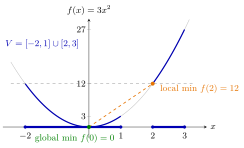

Local Minimum of a Convex Function¶
Proposition¶
Let be a convex domain, let be a continuous function and let . Then:
- (a) if , has a local minimum at and is convex, then has a global minimum on at ;
- (b) if , has a local minimum at and is strictly convex, then has a globally strict minimum on at , that is, for all ;
- (c) if is a convex set with , is convex and there is an such that
then has a global minimum on at .
In (c), need not be an interior point of or of . Applied to : a local maximum of a concave function on a convex set is a global maximum on .
Interpretation¶
A convex function has no false valleys: if no point near is lower than , then no point at all is lower. Checking a small neighbourhood is enough to certify a global minimum.

The figure is Example 1: the convex function on the set , which is not convex. Near only points of belong to , so is a local minimum on with (orange), yet is lower (green). The dashed chord from to stays below the level , as in the proof, but the points of the segment from to that are close to lie in the gap , outside , so they cannot undercut the local minimum.
The proof is one chord. If some had , convexity would put on the segment from to below the chord, which lies strictly below the level everywhere except at . Points of that segment close to would then be lower than , contradicting the local minimum. The argument needs the whole segment to lie in the set, which is why the set must be convex: on the segment from to leaves the set, and the local minimum at is not global (Example 1). Without convexity of , as for , a local minimum can sit above lower values elsewhere (Example 2).
Strict convexity adds uniqueness. A convex function can have a whole interval of minimizers (Example 3), but if two different points both attained the minimum, strict convexity would put the midpoint strictly lower.
Part (c) matters for constrained problems. The Math I test with stationary points only finds interior candidates, while a minimum on often sits on the boundary, where the derivative need not vanish (Example 4). Convexity does not guarantee that a minimum exists: on has none. This result is also why every local optimum of a convex optimization problem is a global one.
Key Results¶
- A local minimum of a convex function at an interior point of is a global minimum on .
- If moreover is strictly convex, the minimum is globally strict, so is the only minimizer.
- For convex on a convex set , a local minimum on , possibly at a boundary point, is a global minimum on .
- Concave version: a local maximum of a concave function on a convex set is a global maximum on .
- Convexity of is necessary: on has a local minimum on at but its global minimum on at (Example 1 below).
Examples¶
1. A set that is not convex. Let and . Near the only points of are in , where is increasing, so has a local minimum on at with . The global minimum on is . The function is convex, but is not, and the segment from to is not contained in .
2. A function that is not convex. Let on . Then and , so has a local minimum at with . It is not global: , and as . The function is not convex, because for .
3. Convex versus strictly convex. The function is convex, as a maximum of convex functions. Every point of is a local and a global minimum with value , so the minimum is not strict. For the strictly convex the local minimum at is globally strict, as (b) predicts: for all .
4. A minimum at a boundary point. Let on and , a convex set, with . For we have , so near , and by (c) is a global minimum on . The point is a boundary point of , and , so the stationary-point test would not have found it.
Prerequisites¶
- Strictly Convex Function
- Convex and Concave Functions on
- Local Maximum and Minimum on
- Global Maximum and Minimum on
Related Concepts¶
- Extrema of Convex Functions on Compact Sets
- Set of Minimizers of a Quasi-Convex Function
- Minimum Characterized by Separation
- Convex Optimization Problem
- Local Extremum
- Stationary Point
- Hessian Test for Convexity and Concavity
Sources¶
- Math VI: Convexity and Optimization · Week 3
- H. E. Nusse and M. Dienstknecht, Math VI: Convexity and Optimization, lecture notes 2026–2027, Section 3.2
Aliases: local minimum is global for convex functions, local optimum is global optimum, local maximum of a concave function Keywords: f(\boldsymbol{x})\geq f(\boldsymbol{a})\ \text{for all }\boldsymbol{x}\in V\cap B(\boldsymbol{a};\varepsilon), f(\lambda\boldsymbol{a}+(1-\lambda)\boldsymbol{b})<f(\boldsymbol{a}), local minimum implies global minimum, globally strict minimum, minimum at a boundary point Symbols: element of, epsilon, infinity, intersection, nabla gradient, real numbers, subset, union
Last updated: 5 November 2026 12:47
Local Minimum of a Convex FunctionConvex Optimization ProblemStrictly Convex FunctionConvex and Concave Functions on R^nLocal Maximum and Minimum on \(\mathbb{R}^n\)Global Maximum and Minimum on \(\mathbb{R}^n\)Extrema of Convex Functions on Compact SetsSet of Minimizers of a Quasi-Convex FunctionMinimum Characterized by SeparationLocal ExtremumStationary PointHessian Test for Convexity and Concavity